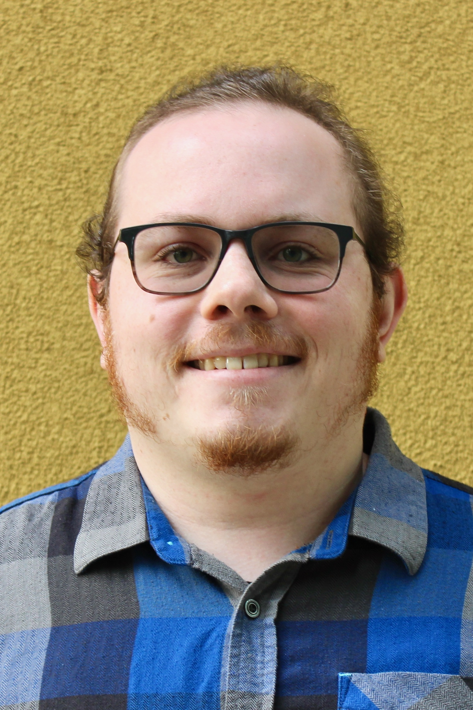

Home

Welcome to my website! I'm currently a first-year graduate student in the Medical Biophysics department at UToronto, studying cardiac imaging with Dr. Graham Wright.
Outside of medical physics, I am interested in computer hardware and software (especially of the Linux variety), photography, Broadway musicals, and Marvel movies. I also can play saxophone (kinda), speak Chinese (kinda), and am a second-degree black belt.
About
Education
- University of Toronto: Ph.D. Medical Biophysics. Expected graduation June 2026.
- University of Chicago: B.S. Mathematics with Honors, concentration in Physics. Graduated June 2020.
- Pacific Ridge School: High School diploma. Graduated June 2016.
Publications
Awards
- MBP Excellence Award - SRI, Physical Sciences Platform
- UChicago President's Scholarship
Conferences Attended
- Low Temperature Detectors Workshop 2019 (Milan, Italy | Poster).
- American Physical Society 2019 March Meeting (Boston, MA. | Talk).
- American Vacuum Society 2018 Prairie Chapter Symposium (Chicago, IL | Poster).
Teaching Experience
UChicago
- MATH 131-132 (Introductory Calculus): Junior Tutor Aut2017 & Win2020
- MATH 151-153 (Calculus): Course Assistant Win/Spr/Aut 2018, Win/Spr 2019
- MATH 195-196 (Multivariable Calculus and Linear Algebra): Spr2018 & Win2020
- MATH Dept. General Tutor: Spr2020
Outreach
- UChicago Math REU: Mentor, June 2020 - Sep. 2020. Links of papers mentored to follow.
- UChicago Math Club: President, Sep. 2019-June 2020.
- Adler Planetarium Space Visualization Laboratory Speaker, Sep. 2018-Sep. 2019.
- UChicago Society of Physics Students Board Member, March 2018-March 2019.
For full pdf version of my CV, click here.
For my undergrad website, click here.
News
2020-09-08: Starting Grad School!
I've successfully moved out of self-quarantine and am starting grad school today with the UToronto SGS orientation! Department and hospital orientations to come later this week.
2020-08-17: Arrived in Toronto!
I've arrived in Toronto and am currently self-quarantining! Given that I don't have much going on, it's a great time to get some initial work done on research!
2020-08-01: Website Operational!
This website is up! Please report any bugs to me :)
2020-07-17: PhD Supervisor Selected!
I am excited to announce that I will be
working with Dr. Graham Wright on motion-corrected
high-resolution MRI cardiac imaging, with a focus on
characterizing scar tissue in the heart.